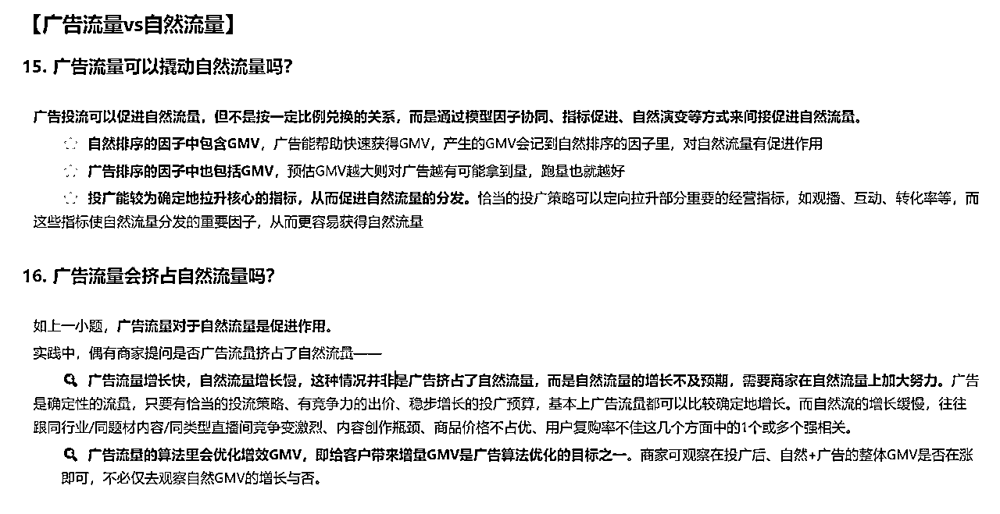
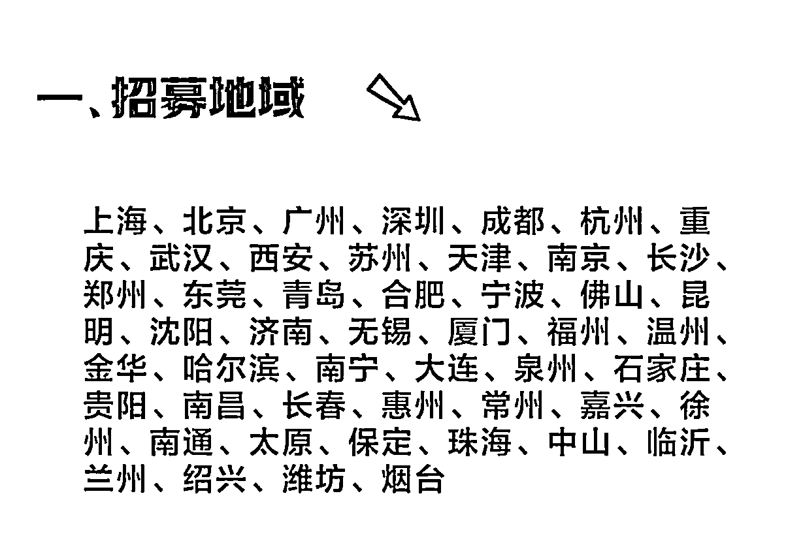

来源：https://qxgrvnd4nbk.feishu.cn/docx/BhYhd1sB8o2uQHxIOHMcGWYjnIg
各位圈友大家好，我是更绪，00后，深耕小红书平台，擅长通过内容+投放获取客资、销售产品和快速跑通各种副业项目的0-1。
前两天去福州参加了2025年生财有术福建见面会，看得出来，生财团队非常用心，聚会办得很好，符合我对生财团队的刻板印象。
上午听了四位嘉宾的分享，从他们分享的内容就看得出来，这场线下会的举办是非常巧妙且用心的，四位嘉宾分享的内容恰好对应创业者的四个重要素质——心态、对外链接、获取信息、团队管理效率。
这里安利一下各位，一定要多参加线下活动聚会，尤其是生财的，你的收获是会超出期待的。
嘉宾分享完了之后，下午的茶话会我组了个局，和10多位圈友一起讨论了25年关于小红书电商、投放、获客、本地生活相关的内容。
通过这篇文章做个复盘，文章都是基于现有数据，和在场圈友自己业务上的体感得出的一些预测结论，如果赞同的话，帮忙点个赞，如果有不同意见的话，欢迎评论区指正。
文章目录：
23年小红书电商板块的整体GMV——398亿左右，24年800亿左右，同比去年翻倍。
23年抖音电商板块的整体GMV——2.7万亿，24年3.98万亿，同比增长46%。
抖音的月活（MAU）10.3亿左右，小红书的月活（MAU）3.3亿左右。
小红书的MAU是抖音的三分之一，但是电商板块的GMV只有抖音的五十分之一。从数据层面来看，小红书的电商板块的GMV，还有16.67倍的增长空间。
考虑到公司水平的差异，理想状态达不到，但是增长个3-5倍是可以期待的。所以小红书自己规划的25年电商板块的GMV在2000-3000亿之间，差不多是奔着3倍的增幅去规划的。
小红书的电商板块在25年至少还有3倍的增长，但是竞争的激烈程度不会有3倍的增长，所以小红书的电商板块，无论是无货源、虚拟电商、自营货盘，都可以直接入场，跟着平台一起实现3倍增长。
近期感受到小红书电商板块的变化，就两个字——正规
从店铺注册的流程、店铺端的UI变化、资质的要求更新、电商投放工具乘风的优化、漏洞的修复等等动作来看，小红书的电商板块正在正规化。
虽然还是做得很潦草，但是能看出来小红书要提电商板块GMV的决心。
小红书团队是真的想把电商板块做好，25年实现2000-3000亿的GMV不是在喊口号，3倍的增长也不是在吹牛，平台是确确实实往这块发力了。
小红书整体电商GMV，直播占比超过60%，笔记/视频占比30%左右，但小红书现在整体直播GMV还是靠笔记导流直播间，直播间作为提升转化率的方式。
很少像抖音这种成熟的平台一样，能够直接通过直播拉起来流量带货。
如果在小红书做电商，有直播条件，能开直播卖，就开直播卖，从数据层面来看，能提升2倍的销售额。
尤其是有自己货盘的业务，通过开直播+微弱人设的模式，可以大大提高GMV。
小红书聚光是23年5月份开始全量公测的，距今已经1年8个月时间，积累了大量的用户数据，功能也趋于完善，是一个非常成熟的客资投放工具。
虽然现在入局的人越来越多，没有以前的蓝海程度，但也绝非是一个竞争激烈的红海渠道，从我们操盘的很多行业来说，入场的人变多，无非就是让获客成本慢慢上涨，赚得少了而已，但不存在亏钱的说法。
只要有资质，有同行在投聚光获客，那就直接跟着他投，不可能会亏钱，尤其是客单价比较高的行业，都不需要太精细化的投放策略，只要钱能花出去，就不会存在亏钱的可能性。
退一万步来说，聚光投放还可以撬动自然流，即使保本投放也是赚的。
小红书的乘风投放工具是24年9月份开始全量公测的，刚刚出来的时候，很粗糙，完全就是把聚光的电商投放板块移除出来的感觉。投放效果也是一言难尽。
小组讨论后得出结论，本质还是因为小红书电商板块的GMV太低，很多用户没有电商行为，用户数据积累太少，人群画像不精准，所以投放效果不好。
现在这个时间节点，比起乘风刚刚上线的时候，投放效果好了一点，但也仅仅是一点，还是不够理想。
随着GMV的增长，电商行为的人群增加，用户数据的积累，以及乘风工具功能的完善，预计等到小红书电商的GMV达到抖音的1/10的时候，乘风投放的效果会不错。
现在这个时间点，如果做乘风投放能保本的话，无脑投就行，投放能撬动起来自然流量，这个除了我们自己测试下来是这样，小红书官方在他们最近新出的乘风投放手册也给了这个结论。
下面是小红书官方的结论：

详细的乘风投放手册自取👉doc.weixin.qq.com
25年小红书的投放获客，会趋于一个平稳期，无论是工具，还是竞争，不太会有特别明显的波动，获客成本会慢慢涨上去，但是不会有特别明显的上升。该入场的都入场了！
不要担心什么红海、越来越卷，因为大多数人都和你一样都在观望，真正下场的永远都是少数人，只要你的行业有同行在投，你就直接跟上脚步，早投早受益，晚投少赚钱。
前段时间平台出台了一系列打击白嫖平台流量的手段，封禁了一大批矩阵同质化内容的矩阵号，包括出台新规定，严格保证使用专业号私信工具留联系方式。
这些动作确确实实对白嫖流量的行为有不小的打击。
平台最近对限制会更多，但是影响并不大，因为本身就是和平台做对抗拿流量，适合不支持投放的类目去做获客。限制变多，打击力度增大，无非就是降低一点我们的效率，上有政策，下有对策。
内容永远是撬动客资的最好支点，找到好的获客模板，批量买号，借助矩阵工具，批量发内容即可，平台更严格，无非就是影响一下转化率。
这个操作本身不复杂，但是有伙人把这个本不复杂的东西复杂化，还创造了好多新鲜的名词...
如果有需要的话，可以评论区留言，我再出个详细的教程贴，让简单的事情回归简单的本质。
24年9月，小红书开放了全国49个一二线城市的本地生活团购店铺，包含下列城市：

从小红书平台的用户心智来说，这个平台是特别适合本地生活的业务，毕竟小红书的slogen——你的生活指南。
但是基于公司调性来说，这块业务发展硬广不会太快，因为小红书团队还是太草台班子了，想了解小红书内部团队的话，可以这篇文章👉复盘“小红书病”:焦虑、恐惧和“小红书味” - 脉脉
25年小红书本地生活板块整体是处于一个探索期，所以也会处在相对蓝海的阶段，判断可以先入场，把美团的一些小众的类目直接移过来。
如果有自己线下业务的盘子，无脑入场即可，配合聚光投流，是个不错的方向。
写到这，本次线下聚会茶话会的复盘也就差不多了。
最后再次感谢生财有术团队，线下聚会现在要办，以后还要多办，线上聊千遍，确实是不如线下见一面！